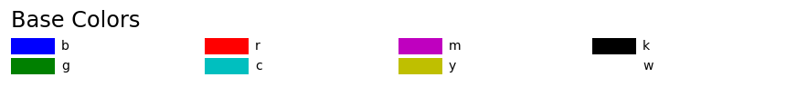
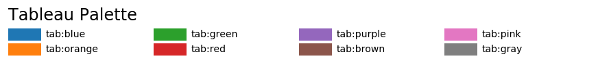
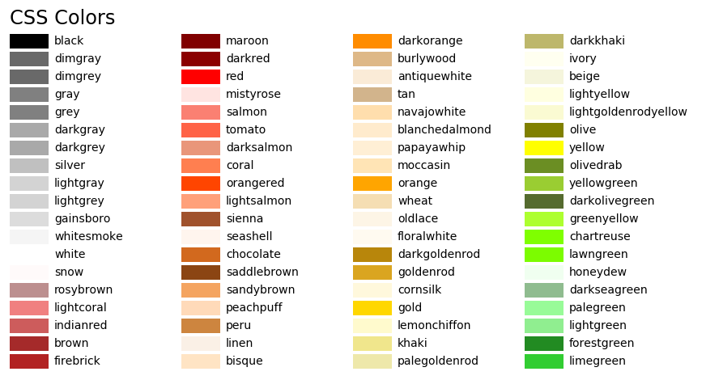
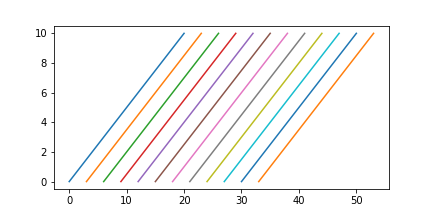
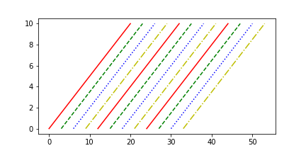
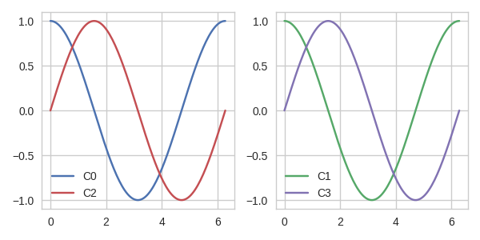
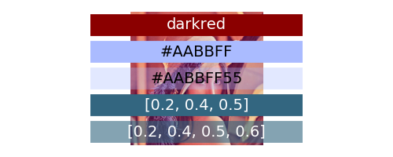
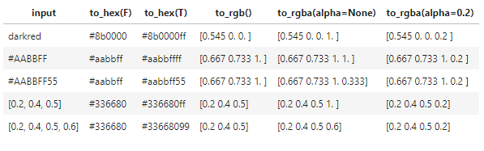
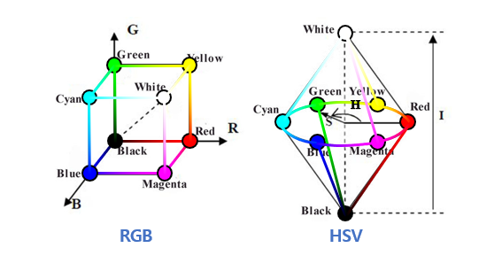
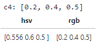

- Matplotlib은 Visualization용 Library로만 알고 계시는 분들이 많습니다.
- 이미지 데이터의 색상 관련 operation을 위해서 opencv, pillow, scikit-image 등을 추가로 설치하고 사용하시는 분들이 많습니다만, 의외로 matplotlib에서도 색상 관련 기능을 제공하고 있습니다.
Matplotlib 공식 홈페이지에서 다양한 예제를 제공하지만 알려지지 않은 부분이 많아 여기에 정리해 봅니다.
1
2
3
4import matplotlib.pyplot as plt
import matplotlib as mpl
%matplotlib inline
print(mpl.__version__)- 실행결과: 버전은 3.1.3. 기준입니다.
1
'3.1.3'
References
1. Colors
- Matplotlib에 어떤 색상이 있고, 이들을 어떻게 사용하는지 살펴보겠습니다.
1.1. Matplotlib Color Set
- Matplotlib에는 크게 3가지 부류의 색상이 있습니다.



이들이 어떻게 저장되어 있는지를 확인하기 위해 출력해보면 재밌는 사실을 알게 됩니다.
1
2
3
4
5import matplotlib.colors as mcolors
print("mcolors.BASE_COLORS['r']: {}, type={}".format(mcolors.BASE_COLORS['r'], type(mcolors.BASE_COLORS['r'])))
print("mcolors.TABLEAU_COLORS['tab:red']: {}, type={}".format(mcolors.TABLEAU_COLORS['tab:red'], type(mcolors.TABLEAU_COLORS['tab:red'])))
print("mcolors.CSS4_COLORS['red']: {}, type={}".format(mcolors.CSS4_COLORS['red'], type(mcolors.CSS4_COLORS['red'])))- 실행결과, 각 항목이 담고 있는 색상정보의 형식이 미묘하게 다릅니다.
BASE_COLORS는tuple형태인 반면 나머지 둘은string입니다.- 그리고 같은 red라고 해도 TABLEAU_COLORS와 CSS4_COLORS의 값, 대소문자가 다릅니다.
- 실제 위 그림에서 봐도 색이 다릅니다.
1
2
3mcolors.BASE_COLORS['r']: (1, 0, 0), type=<class 'tuple'>
mcolors.TABLEAU_COLORS['tab:red']: #d62728, type=<class 'str'>
mcolors.CSS4_COLORS['red']: #FF0000, type=<class 'str'>
다시 말하면 Matplotlib 내에서 다루어지는 색상 표현이 한 가지로 고정되지 않았고, 이들은 당연히 matplotlib 내부 기능을 통해 변환이 가능합니다.
Matplotlib 내부의 color는 다음과 같이 dictionary 형태로 한번에 수집해서 활용할 수 있습니다.
1
2
3
4
5
6
7
8
9
10
11
12# 색상 전체 명단 수집
colorlist = {}
colorlist.update(mcolors.BASE_COLORS)
colorlist.update(mcolors.TABLEAU_COLORS)
colorlist.update(mcolors.CSS4_COLORS)
# 색상 이름과 코드로 분리해서 관리
colornames = []
colorcodes = []
for name, color in colorlist.items():
colornames.append(name)
colorcodes.append(color)
1.2. Cycler
- 설명에 앞서 아래 그림을 잠깐 봅시다.
12개의 직선이 일정한 간격을 두고 평행하게 늘어선 그림인데, 자세히 보면 색상에 중복이 있습니다.
1
2
3
4
5
6
7
8
9
10import numpy as np
data_x = np.array([0,20])
data_y = [0,10]
fig, ax = plt.subplots(figsize=(6,3))
for i in range(12):
ax.plot(data_x + 3*i, data_y)
plt.show()
첫번째와 두번째 푸른 직선과 오렌지색 직선이 마지막 두 직선에서 반복되는 것을 확인할 수 있습니다.
- matplotlib에 기본적으로 10개의 색이 주어지고 직선이 반복될 때마다 이를 순차적으로 반복하는 설정이 되어 있기 때문입니다.
rcParams의axes.prop_cycle항목을 통해 확인할 수 있습니다.1
print(plt.rcParams['axes.prop_cycle'])
- 실행결과 : 색상 명단이 출력됩니다.
1
cycler('color', ['#1f77b4', '#ff7f0e', '#2ca02c', '#d62728', '#9467bd', '#8c564b', '#e377c2', '#7f7f7f', '#bcbd22', '#17becf'])
- 실행결과 : 색상 명단이 출력됩니다.
mpl.rc('axes', prop_cycle=)명령을 통해서 수정할 수 있고,matplotlibrc파일의axes.prop_cycle부분을 통해 수정할 수도 있습니다.1
2
3
4
5
6
7
8
9
10
11
12# cycler 수정
from cycler import cycler
plt.rc('axes', prop_cycle=(cycler(color=['r', 'g', 'b', 'y']) +
cycler(linestyle=['-', '--', ':', '-.'])))
data_x = np.array([0,20])
data_y = [0,10]
fig, ax = plt.subplots(figsize=(6,3))
for i in range(12):
ax.plot(data_x + 3*i, data_y)
plt.show()- 실행결과 : 위의 그림에서 선의 모양과 색깔이 변경되었습니다.

- 실행결과 : 위의 그림에서 선의 모양과 색깔이 변경되었습니다.
- cycler로 지정된 color는 “CN” color selection이라는 개념을 통해 선택이 가능합니다.
- 아래는 동일한 그래프에
seaborn-whitegridstyle의 첫번째(C0)부터 네번째(C4)까지 color를 다르게 적용하는 예시입니다.1
2
3
4
5
6
7
8
9
10
11
12
13
14
15
16
17import numpy as np
import matplotlib.pyplot as plt
import matplotlib as mpl
th = np.linspace(0, 2*np.pi, 128)
mpl.style.use('seaborn-whitegrid')
fig, ax = plt.subplots(nrows=1, ncols=2, figsize=(6, 3))
def demo(num):
ax[num].plot(th, np.cos(th), f'C{num}', label=f'C{num}')
ax[num].plot(th, np.sin(th), f'C{num+2}', label=f'C{num+2}')
ax[num].legend()
demo(0)
demo(1)
2. Color Functions
- matplotlib에 내장된 color function을 훑어봅시다.
- 예제로 사용할 color 다섯 개를 먼저 정의합니다.
- Lena image 위에 덮인 색상에서 알 수 있듯 alpha는 불투명도를 의미합니다.
1
2
3
4
5
6
7import matplotlib.colors as mcolor
c1 = 'darkred' # matplotlib color name
c2 = '#AABBFF' # hex code without alpha
c3 = '#AABBFF55' # hex code with alpha
c4 = [0.2, 0.4, 0.5] # RGB
c5 = [0.2, 0.4, 0.5, 0.6] # RGBA: RGB + alpha
2.1. to_hex(), to_rgb(), to_rgba(): 색상 표현 변경
- 색상 이름을 입력받아
hex또는rgb형식으로 변환하는 함수입니다. - 백문이 불여일견이므로 우선
pd.DataFrame으로 요약해서 실행해보겠습니다.1
2
3
4
5
6
7
8
9
10
11
12
13
14
15
16
17
18import pandas as pd
colors = pd.DataFrame(columns=['input', 'to_hex(F)', 'to_hex(T)',
'to_rgb()', 'to_rgba(alpha=None)', 'to_rgba(alpha=0.2)'])
for i in range(5):
# to_hex()
hex_code0 = mcolor.to_hex(eval(f'c{i+1}')), keep_alpha=False)
hex_code1 = mcolor.to_hex(eval(f'c{i+1}')), keep_alpha=True)
# to_rgb()
rgb_code0 = np.round(mcolor.to_rgb(eval(f'c{i+1}')), 3)
# to_rgba()
rgb_code1 = np.round(mcolor.to_rgba(eval(f'c{i+1}')), 3)
rgb_code2 = np.round(mcolor.to_rgba(eval(f'c{i+1}'), 0.2), 3)
colors.loc[i] = [eval(f'c{i+1}'), hex_code0, hex_code1, rgb_code0, rgb_code1, rgb_code2]
- colors DataFrame 출력 결과,
to_hex()는keep_alpha옵션에 따라 alpha 채널이 삭제/추가되는 반면to_rgb()는 alpha 채널이 자동적으로 삭제되고,to_rgba()는alpha옵션에 따라 alpha 값이 원래 값 vs 지정 값으로 설정됩니다.
2.2. to_rgba_array(): 일괄 변경
- 0~1 사이 값들이 저장된 (n, 4) array를 RGBA array로 일괄 변경합니다.
(n, 3) array가 입력되는 경우 alpha=1로 자동 설정되며, column 수가 3 미만인 경우 에러가 납니다.
1
2
3
4
5
6
7
8
9
10
11
12
13
14from random import random
# random (5, 4) array
colors = []
for i in range(5):
carray = [random(), random(), random(), random()]
colors.append(carray)
print('# colors=\n', colors)
print('# type(colors)=', type(colors))
# to_rgba_array
rgb_code = mcolor.to_rgba_array(colors)
print('\n# rgb_code=\n', rgb_code)
print('# type(rgb_code)=', type(rgb_code3))- 실행결과: type이
numpy.ndarray로 바뀌었습니다.1
2
3
4
5
6
7
8
9
10
11# colors=
[[0.40375029735610757, 0.6210923647004767, 0.6568133189767286, 0.8470279451052253], [0.5433032508130815, 0.14398085571268193, 0.7303598026172411, 0.7963294484621202], [0.8613064656492081, 0.8976140923488195, 0.05826502488661911, 0.42778774608985837], [0.39198017055539114, 0.8541915083363212, 0.04344057833193116, 0.5649137794285194], [0.8159908658774397, 0.21485709604877146, 0.7452954405793056, 0.4980798212359918]]
# type(colors)= <class 'list'>
# rgb_code=
[[0.4037503 0.62109236 0.65681332 0.84702795]
[0.54330325 0.14398086 0.7303598 0.79632945]
[0.86130647 0.89761409 0.05826502 0.42778775]
[0.39198017 0.85419151 0.04344058 0.56491378]
[0.81599087 0.2148571 0.74529544 0.49807982]]
# type(rgb_code)= <class 'numpy.ndarray'>
- 실행결과: type이
Numpy에는 Masked Array라는 기능이 있습니다.
- invalid 등 특정 데이터에 mask를 씌워 별도의 처리를 하는 것인데,
to_rgba_array()에서는 RGBA로 변환하지 말아야 할 부분이라는 의미입니다.1
2
3
4
5
6
7
8
9
10
11
12import numpy.ma as ma
# masked array
mask=[[0,0,0,0], [0,0,0,0], [1,1,1,0], [0,0,0,1], [0,0,0,0]]
mx = ma.masked_array(colors, mask)
print('# mx=\n', mx)
print('# type(mx)=\n', type(mx))
# to_rgba_array
rgb_code = mcolor.to_rgba_array(mx)
print('\n# rgb_code, masked=\n', rgb_code)
print('# type(rgb_code, masked)=', type(rgb_code3))- 실행결과: 일부라도 mask 처리된 데이터가 모두 [0, 0, 0, 0]으로 변환되었습니다.
1
2
3
4
5
6
7
8
9
10
11
12
13
14
15
16
17
18
19# mx=
[[0.40375029735610757 0.6210923647004767 0.6568133189767286
0.8470279451052253]
[0.5433032508130815 0.14398085571268193 0.7303598026172411
0.7963294484621202]
[-- -- -- 0.42778774608985837]
[0.39198017055539114 0.8541915083363212 0.04344057833193116 --]
[0.8159908658774397 0.21485709604877146 0.7452954405793056
0.4980798212359918]]
# type(mx)=
<class 'numpy.ma.core.MaskedArray'>
# rgb_code, masked=
[[0.4037503 0.62109236 0.65681332 0.84702795]
[0.54330325 0.14398086 0.7303598 0.79632945]
[0. 0. 0. 0. ]
[0. 0. 0. 0. ]
[0.81599087 0.2148571 0.74529544 0.49807982]]
# type(rgb_code, masked)= <class 'numpy.ndarray'>
- 실행결과: 일부라도 mask 처리된 데이터가 모두 [0, 0, 0, 0]으로 변환되었습니다.
2.3. rgb_to_hsv() and hsv_to_rgb()
- color 표현 방법은 크게 RGB(Red, Green, Blue)와 HSV(Hue, Saturation, Value)로 나뉩니다.
- BGR(Blue, Green Red), HSL(Hue, Saturation, Lightness), YCrCb(Luma, Blue-difference, Red-difference), CIE(Commission internationale de l’éclairage) 등도 있으나 여기서는 다루지 않겠습니다.
- RGB color space 위에 HSV를 얹으면 대략 이런 관계를 가집니다.

- 변환식이 matplotlib에 내장되어 한 줄로 편하게 실행할 수 있습니다.
1
2hsv_c4 = mcolor.rgb_to_hsv(c4)
rgb_c4 = mcolor.hsv_to_rgb(hsv_c4)